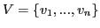
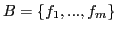

JOHN FRANCO, MICHAL KOURIL, SEAN WEAVER
SBSAT is a software package used primarily for solving instances of a
generalization of the well-known Satisfiability problem. In particular, the
problem solved by SBSAT is the following:
| GIVEN: | Input variable set
 of Boolean variables, set of Boolean functions
 where, for all |
| RESULT: | An assignment of values to
variables of |
If, for all  , is a function corresponding to the conjunction
of a subset of variables of
, is a function corresponding to the conjunction
of a subset of variables of  , then the problem is reduced to the
well-studied Boolean Satisfiability Problem. If the variables of
, then the problem is reduced to the
well-studied Boolean Satisfiability Problem. If the variables of  are allowed to take arbitrarily many values, then the problem becomes
the well-studied Constraint Satisfaction Problem.
are allowed to take arbitrarily many values, then the problem becomes
the well-studied Constraint Satisfaction Problem.
The functions  may be specified in several different
ways. But, there is one canonical input specification
format, which we call the canonical form: a conjunction of a
collection of BDDs1. Any recognized user input is translated to the
canonical form, if it is not in that form already. Of course, the user
is free to supply his/her own translation to BDDs which then may be
input: in this way all possible input formats can be accommodated.
Specific, supported input formats are:
may be specified in several different
ways. But, there is one canonical input specification
format, which we call the canonical form: a conjunction of a
collection of BDDs1. Any recognized user input is translated to the
canonical form, if it is not in that form already. Of course, the user
is free to supply his/her own translation to BDDs which then may be
input: in this way all possible input formats can be accommodated.
Specific, supported input formats are:
Examples of how a user might develop a custom translation to the canonical form from other formats are found in Section 4.8.
For maximum effectiveness, the user should be aware of and know how to control the three phases of SBSAT execution, shown schematically in Figure 1. In the first phase an input is read from an input file. The user must decide which input format to use and build the input file accordingly. There are three issues here: namely choosing the type of input format, writing the input in a way that can be exploited by elements of the remaining phases, and keeping the syntax correct. Format types and syntax are described in Sections 4 and 9. Comments on writing exploitable input may be found in Section 18. In the second phase various levels of preprocessing are applied to the input instance with the intention of producing an internal set of constraints (in canonical form) that are either logically equivalent 2 or equi-satisfiable 3 to the original and yields a smaller search space through advanced and intelligent search heuristics and learning. The user may control this phase using command line switches when launching the program. Details of the kinds of preprocessing available and their effects are found in Sections 5.1 and 10 along with examples of their use. In the third phase the internal form (that is, set of constraints in canonical form) is searched for a solution. The user must choose one of the ways to perform a search and the search heuristic which is used to select unassigned variables to be assigned values. Future versions will allow the user to define a search heuristic and coordinating preprocessing elements. Choices for searching are:
Reasons for choosing one of the above are given in
Sections 12.1- . Search heuristics are
used to help control the size of the search space. In the current version
the user may choose one of the following to control the SMURF solver:
. Search heuristics are
used to help control the size of the search space. In the current version
the user may choose one of the following to control the SMURF solver:
The user may also choose one of the following to control the BDD WalkSAT solver:
The size of the search space can be further controlled through learning. As backtracks occur, new constraints, called Lemmas (described in Section 12.1), also referred to as conflict clauses, or learned clauses, are added to the internal constraint set. These can prevent some fruitless backtracking later in the search. However, there is some overhead incurred by Lemmas. Hence it is important to choose carefully which Lemmas are to be saved, how many Lemmas can be saved at a maximum, and which Lemmas to discard when the maximum is exceeded. These choices are controlled by switches on the command line and are described in Section 7. The results of operations initiated by those switches are explained in Section 12.1.
The solver was successfully tested and compiled on a number of Unix based platforms such as Linux, DEC, Solaris, Mac OS X, Windows/Cygwin with a number of different compilers such as gcc2.95, gcc3.x, solaris-cc, dec-cc, pgcc.